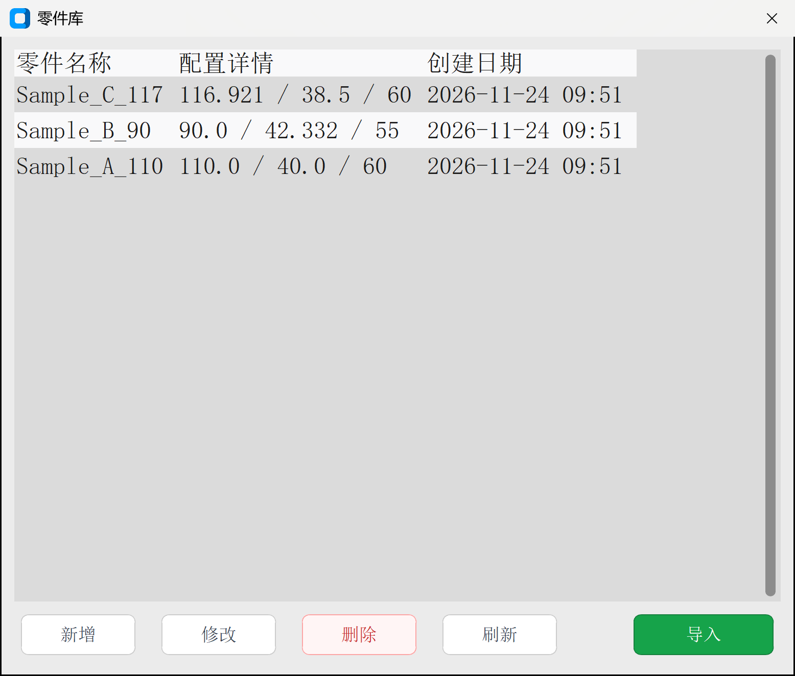

5.1 零件库管理指南
零件库 用于集中归档和复用历史加工过的环面蜗杆工艺方案。点击顶部菜单 工具 零件库 即可打开独立管理窗口，避免在不同型号工件切换时逐页手工重录参数。

一、窗口结构与排序功能
零件库 窗口由上方三列数据表格与底部五枚操作按钮组成（无单独搜索栏或行内按钮）：
| 列标题 | 显示内容 | 排序与交互说明 |
|---|---|---|
零件名称 |
工件档案文件夹名称（如 Sample_C_117） |
点击列头可切换按名称升序 / 降序排列 |
配置详情 |
自动从零件目录内读取并汇总核心参数摘要（中心距 / 蜗杆喉部直径 / 蜗轮齿数） |
用于快速辨识各规格，不支持点击排序 |
创建日期 |
零件文件夹创建时间戳（精确到分钟） | 点击列头可切换按时间先后升序 / 降序排列 |
- 点击列表中的任意一行即可高亮选中该零件，随后配合底部按钮执行重命名、删除或导入。
二、五枚底部操作按钮详解
| 按钮名称 | 功能作用 | 实操步骤与注意事项 |
|---|---|---|
新增 |
将当前已保存的工作配置归档为新零件 | 1. 建议先在主界面点击右下角 保存设置，确保全部最新输入已落盘；2. 点击 新增，在弹窗中输入合法零件名并确认；3. 软件将当前三份工作配置文件复制进新零件目录并高亮选中。 |
修改 |
仅用于重命名当前选中的零件名称 | 1. 选中目标行后点击 修改，在 修改零件名称 弹窗中输入新名称；2. 若需更新已有零件的参数内容，请先 导入 并在主界面改动后 保存设置，再删除旧档重新 新增（或另存新名）。 |
删除 |
永久移除选中的零件档案 | 选中目标行后点击 删除，在确认提示框点击确认即可删除对应磁盘目录；删除前请确认不再追溯历史程序。 |
刷新 |
重新扫描零件库目录并刷新列表 | 当您在系统文件管理器中手工拷入或整理了外部零件文件夹后，点击 刷新 立即同步显示。 |
导入（右侧绿色） |
用选中零件的全套配置覆盖当前主界面 | 1. 选中目标行后点击绿色 导入 按钮并确认；2. 软件校验零件目录完整性后，将其配置写回当前工作区并自动刷新全软件 9 个子功能页（若目录缺少任一配置文件将提示报错）。 |
三、零件命名规范与校验规则
点击 新增 或 修改 提交名称时，软件按以下规则严格校验（支持按 Enter 确认或 Esc 取消）：
| 校验项目 | 规则要求 | 建议示例 | |
|---|---|---|---|
| 非空约束 | 零件名称不能为空 | Sample_C_117 |
|
| 非法字符限制 | 不允许包含 `\ / : * ? " < > | ` | 使用下划线连接，如 M3_25_Z60_A117 |
| 结尾字符限制 | 不能以英文句点 . 结尾 |
避免使用 Sample. 等写法 |
|
| 系统保留名 | 禁止使用 CON、PRN、AUX、NUL、COM1–COM9、LPT1–LPT9 |
建议包含模数与中心距代号 | |
| 长度上限 | 最长不超过 100 个字符 |
建议控制在 30 个字符以内 |
提示：建议按“规格代号 + 中心距”（例如
Sample_C_117）统一命名；跨设备迁移或技术支持排查前，请先清理含客户全称或内部敏感项目号的档案目录。
四、本地存储结构与备份迁移
软件在本地配置目录 ~/.eg/（Windows 系统默认为 %USERPROFILE%\.eg\）下维护所有运行配置与零件档案：
~/.eg/
├── eg_config_main.json # 当前工作区：磨削参数 + 语言设置
├── eg_config_draw.json # 当前工作区：绘图工具参数
├── eg_config_tool.json # 当前工作区：分析工具参数
├── eg_license.lic # 离线数字签名授权文件（若已导入）
├── error.log # 异常堆栈日志（排查问题时查看）
└── PartsLibrary/
├── Sample_A_110/
│ ├── eg_config_main.json
│ ├── eg_config_draw.json
│ └── eg_config_tool.json
├── Sample_B_90/
└── Sample_C_117/
- 单零件完整迁移：只需将
PartsLibrary/<零件名称>整夹复制到另一台已安装 EnveloGrinding 的电脑对应~/.eg/PartsLibrary/目录，在软件零件库中点击刷新即可直接导入使用。